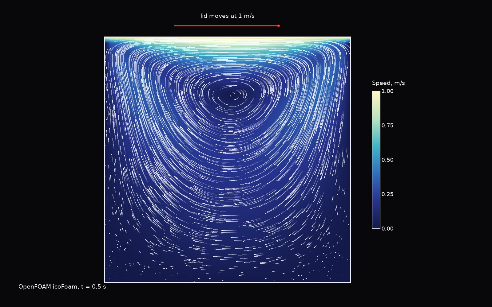

Nonlinear FE analysis
Plasticity, contact, large deformation, buckling and what happens after it.
The people who write the software run the studies, and a partner laboratory runs the tests. You get the answer and the model that produced it.
Plasticity, contact, large deformation, buckling and what happens after it.
Lighter, stiffer parts from topology and parameter studies on your load cases.
From fibre and matrix to ply and laminate properties, by unit-cell homogenisation.
Welding, heat treatment and forming: distortion, residual stress and phases.
Flow and heat transfer studies in OpenFOAM, with the case built from your CAD.
Drawings to models, 2D to 3D conversion, and structural steel detailing.
External aerodynamics and internal flow, solved in OpenFOAM with the case built from your CAD.

OpenFOAM's own lid-driven cavity tutorial, solved with icoFoam. A tutorial case, not a customer study.
Your team, running its own studies
Courses built around your parts and your process, not a generic syllabus.
Physical tests that feed the model
Run with a partner laboratory. We plan the tests, manage them, and turn the measurements into material data.
Geometry, material, process, and the question you need answered.
What data is needed, what the model covers, and what it does not.
The study, with a mesh check and a comparison where a reference exists.
A report, the result files, and the script that re-runs the study.
The part, the process, the question. We reply with what a study would take and what it would show.